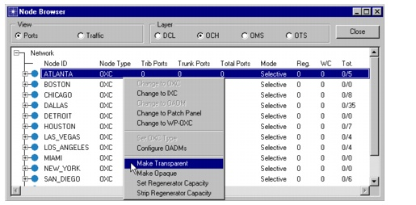
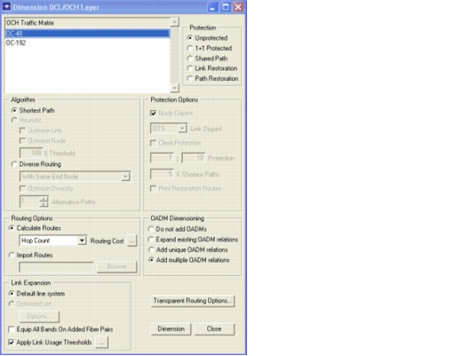
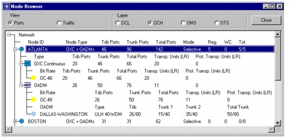

Optical Network Architectures > Additional Exercises
Additional Exercises
- In the previous example, only selective nodes were considered. SP Guru Transport Planner also supports fully transparent and opaque nodes in transparent OCH layer mode. The transparency of a node can be set in the node browser.

- The example only considered OXCs in the nodes. However, SP Guru Transport Planner also supports OADM nodes in transparent mode. These nodes contain, next to an OXC, OADMs between selected fiber pairs. There are two ways to add OADMs to a node: manually or automatically.
To create an OADM manually, select Network > Node Browser and choose OCH as layer. Right-click on a node and select Configure OADMs. This dialog box displays a list of all unused fiber pairs incident to the selected node. Select two fibers while holding down the Control key and press Add OADM to create an OADM in the node between the selected fiber pairs.
SP Guru Transport Planner can also install the OADMs automatically while dimensioning the OCH layer. This is supported by the OADM Dimensioning option in the Design > Dimension DCL/OCH Layer dialog box.
Redo step 5 of the previous exercise, but this time add OADMs to the nodes.
Procedure 5-3 Installing OADMs
- Open the WDMGuru_Tutorial_Transparent_Routing project.
- Switch to the transparent scenario (choose Scenarios > Switch to Scenario > transparent).
- Strip all fibers in the network (using the Design > Strip Capacity... dialog box).
- Select Design > Dimension DCL/OCH Layer....
- Select OC-48 (OCH Traffic Matrix) and Add multiple OADM relations (OADM Dimensioning). Use the default settings for the other options.
- Press Dimension.

- Close the Dimensioning Results and the Dimension DCL/OCH Layer dialog boxes.
- Select the Network > Node Browser.
- Select node ATLANTA.
Note that one OADM has been added to the node. The OADM is oriented between "Dallas" and "Washington".

For more information on the OADM node models and the OADM dimensioning options, see the SP Guru Transport Planner User Guide.
End of Procedure 5-3
| Home © 1987-2007 OPNET Technologies, Inc. All Rights Reserved. This software may be covered by one or more U.S. Patents. See complete patent notice in the Legal Notices section. OPNET Support Center |